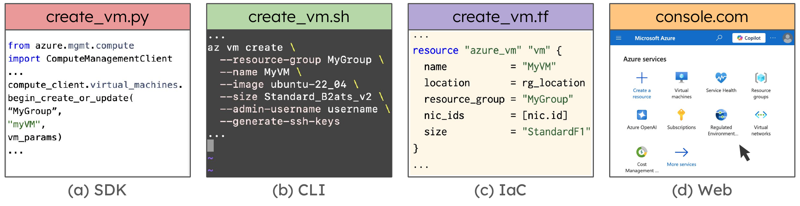
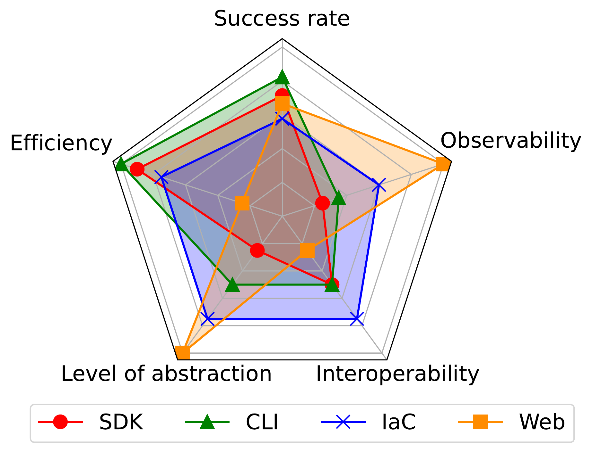

The quest for AI Agents as DevOps.
Cloud infrastructure is the backbone of the modern IT industry, yet managing it remains surprisingly manual and fragile. From provisioning resources to debugging failures and monitoring runtime health, DevOps engineers constantly wrestle with complexity, partial observability, and high-stakes errors.
In our recent paper, “Cloud Infrastructure Management in the Age of AI Agents,” we set out to understand whether large language model (LLM)–based agents can meaningfully automate real cloud management tasks — and where they fall short.
We deliberately stress-tested current agents against real cloud interfaces. Our goal was not to show that agents can succeed in idealized settings, but to expose the fundamental friction between LLMs and cloud management modalities. The result: agents are promising, but today’s cloud interfaces were never designed for them.
The Setup: Four Agents, Four Modalities
To test the current capabilities of AI, we conducted a preliminary study using four different "modalities"—the standard interfaces humans use to manage the cloud. We built four distinct AI agent prototypes to perform tasks on Microsoft Azure:
- SDK Agent: Uses Python code (imperative programming).
- CLI Agent: Uses command-line shell scripts (terminal-based).
- Infrastructure-as-Code (IaC) Agent: Uses Terraform (declarative configuration).
- Web Agent: Navigates the web portal visually (just like a human clicking buttons in the web console).

Figure 1: Four cloud user interaction modalities with simplified code snippets.
Insight 1: Speed Comes at the Cost of Awareness
The CLI agent dominated in efficiency, completing many tasks in a single step (1.6 steps on average). Generating one command was often enough to spin up resources that would require dozens of UI interactions in the web portal. In contrast, the Web agent was painfully slow — sometimes taking over 30× more steps due to page loads, menu navigation, and confirmation dialogs.
But this speed advantage collapsed during update tasks.
Updating existing infrastructure requires understanding the current cloud state. Here, the CLI and SDK agents struggled. They frequently failed because they issued update commands without first querying existing configurations — or misinterpreted partial state returned by APIs. Each additional “state-query” step introduced new failure modes.
The Web agent, surprisingly, performed better on updates (67% success rate versus 33% for IaC). The reason was simple but revealing: the UI shows the state explicitly. Disk attachments, VM settings, and dependencies were visible on screen, reducing hallucinations and incorrect assumptions.
Observation 1: Blindness to State
Coding agents are fast because they tend to skip state inspection — but that same blindness becomes a liability once tasks require modifying existing infrastructure.
This exposes a core tension: LLMs are good at issuing actions, but cloud updates are fundamentally state-dependent.
Insight 2: Declarative Tools Aren’t Always the Right Tool
Infrastructure-as-Code (IaC) is widely regarded as best practice for human DevOps teams. It abstracts away execution details and provides strong guarantees for large-scale changes.
But when we evaluated agents on monitoring tasks, IaC performed the worst — with only a 40% success rate.
Why?
IaC tools are designed to define desired state, not to query runtime telemetry. When asked to check system health or retrieve live information, the IaC agent frequently hallucinated unsupported commands or misused Terraform constructs to approximate monitoring functionality.
Meanwhile, the Web agent excelled. Azure’s dashboards already aggregate metrics, logs, and health signals into visual summaries. The agent could simply “look” at graphs that don’t exist in SDK or CLI form — and that IaC cannot express at all.
Observation 2: Misalignment of Tools and Needs
A tool that is ideal for humans in one phase of the cloud infrastructure lifecycle can be fundamentally misaligned with an agent’s needs in another.
This is not an implementation bug — it’s a design mismatch.
Insight 3: Insight 3: Observability Shapes Agent Reliability
Across all tasks, one factor consistently predicted agent success: how clearly the modality exposed system state and errors.

Figure 2: The radar chart summarizing agent performance across different modalities.
- SDK and CLI agents benefited from precise error messages and return codes, which sometimes allowed recovery after failure.
- Web agents, while slower, benefited from rich observability — visual structure, dashboards, and pre-validated UI flows.
- IaC agents struggled whenever context windows truncated state, or when runtime information fell outside declarative abstractions.
Observation 3: Agent Reliability is Dependent on Observability
Agent failures are often not due to reasoning errors, but due to missing or poorly surfaced state.
This suggests that improving agents alone is insufficient — the interfaces themselves must become more agent-aware.
The Path Forward: Rethinking Cloud Management for Agents
Our experiments point to a clear conclusion: simply wiring an LLM to a cloud shell is not enough. Effective agentic cloud management requires architectural changes, not just better prompts.

Figure 3: Envisioned agentic system architecture and workflow.
We outline a roadmap with three key pillars:
1. Multi-Agent, Modality-Aware Orchestration
No single interface is universally optimal. Fast provisioning favors CLI; large-scale updates favor IaC; debugging and monitoring favor UI-level visibility.
Future systems should route tasks to specialized agents, rather than forcing one agent to master everything.
2. Sandboxed Exploration (“Cloud Gyms”)
Cloud actions are slow, costly, and irreversible. Trial-and-error in production is unacceptable.
Agents need safe and low-cost environments to learn and explore strategies, validate workflows, and fail cheaply before touching real infrastructure.
3. Workflow Memory and Guardrails
Once an agent figures out how to perform a complex task, it shouldn’t start from scratch next time.
Validated workflows should be cached, reused, and guarded by explicit human-in-the-loop checks — especially for destructive or high-impact operations.
Closing Thoughts
Cloud infrastructure management is ripe for automation — but our study shows that the interface matters as much as the model.
By combining the speed of CLI, the scalability of IaC, and the observability of ClickOps — and by designing agents that can reason across these modalities — we can move toward a new class of autonomous cloud engineers that are not only capable, but trustworthy.
If you’re building AI agents for real systems, this is the uncomfortable takeaway: today’s tools were built for humans, not agents — and agents expose their cracks.
For more details, check out our full paper in the ACM SIGOPS Operating Systems Review.
@article{yang2025cloudagent,
author = {Yang, Zhenning and Bhatnagar, Archit and Qiu, Yiming and Miao, Tongyuan and Tser Jern Kon, Patrick and Xiao, Yunming and Huang, Yibo and Casado, Martin and Chen, Ang},
title = {Cloud Infrastructure Management in the Age of AI Agents},
journal = {SIGOPS Oper. Syst. Rev.},
year = {2025}
}